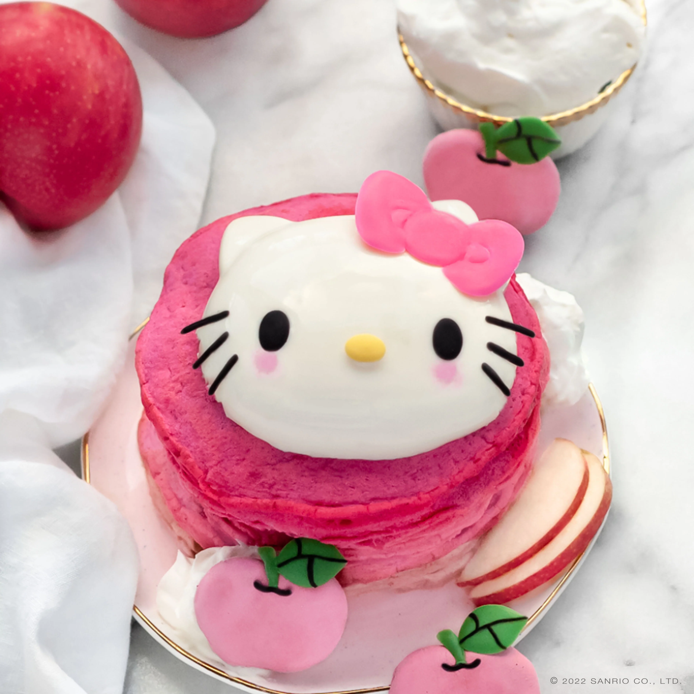

Hello Kitty Apple Pie Pancakes

Description
A super cute recipe, inspired by Hello Kitty's favorite afternoon snack! But who said we can only eat this in the afternoon? This recipe takes all the flavors of apple pie and wraps it into a delicious breakfast.
Ingredients
- 1 small apple
- 3 tablespoons of confectioner's sugar
- 1 teaspoon of joy
- 1 cup flour
- A pat of butter
Steps
- Blend the apple until smooth.
- Mix the sugar and flour in a large bowl.
- In a separate bowl, mix the apple and joy together until blended.
- Add all the sugar-flour blend bit by bit into the apple and joy, mixing until incorporated each time.
- Heat the butter on medium heat until melted in a small pan.
- Add a dollop of the batter to the pan. Cook for 3 minutes, then flip and cook for 2 minutes more.
- Transfer to a plate and let cool for 2 minutes. If you want, you can decorate!